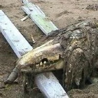
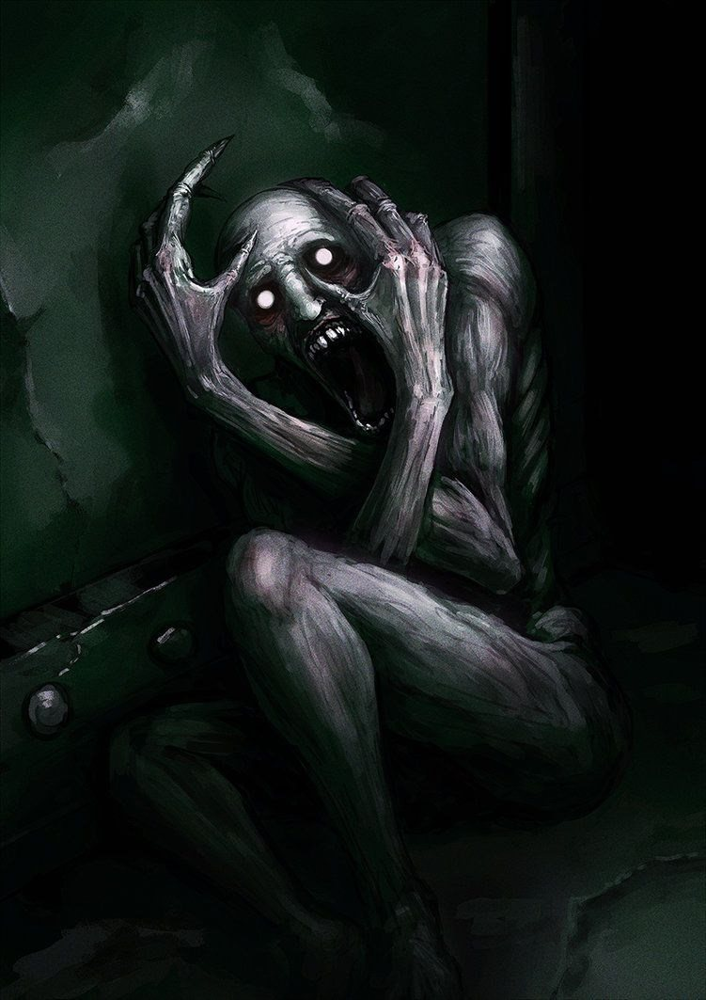
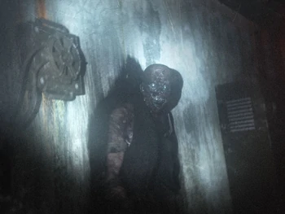

Fundacion SCP
La Fundación SCP es una organización ficticia dedicada a la investigación de fenómenos paranormales. Pertenece al universo de ficción colaborativa registrado en el sitio web homónimo. Dentro del entorno de la página, la Fundación SCP es la responsable de localizar y contener a individuos, entidades, ubicaciones y objetos que violan la ley natural (referidos como SCP). La web es redactada por comunidades de usuarios e incluye elementos de diversos géneros tales como horror, ciencia ficción y fantasía urbana. Las entradas incluyen procedimientos de contención adecuados para las entidades paranormales que alberga la fundación, y relatos cortos sobre eventos relacionados con la actividad que realizan.

SCP-173

SCP-682
SCP-049

SCP-096
